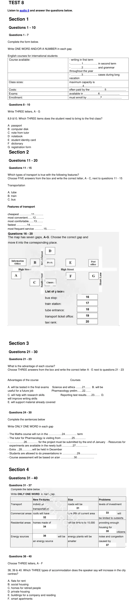

IELTS Listening: Test 8
Audio
This is the whole test, in one recording. In the exam you hear it once, so try a first listen without pausing.
Question book
Section 1
Questions 1–7
Complete the form below.
Write ONE WORD AND/OR A NUMBER in each gap.
English courses for international students
Course available: - writing in first term
- 1 in second term
2 and grammar throughout the year
3 cases during long vacation
Class sizes: maximum capacity is
4
Costs: often paid by the 5 Exams: available in 6
Enrollment: must enroll by 7
Questions 8–10
Write THREE letters, A - G
8 & 9 & 10 Which THREE items does the student need to bring to the first class?
- A passport
- B computer disk
- C note from tutor
- D notebook
- E student identity card
- F dictionary
- G registration form
Section 2
Section 3
Questions 21–23
What is the advantage of each course?
Choose THREE answers from the box and write the correct letter A - E next to questions 21 - 23
Advantages of the course Courses
A. will be tested in the final exams Science and ethics 21 B. will be useful for a future job Pharmacology prelim 22
C. will help with research skills Reporting test results 23 D. will improve writing skills
- E will support material already covered
Questions 24–30
Complete the sentences below Write ONLY ONE WORD in each gap
The Maths course will run in the 24 term
The tutor for Pharmacology is visiting from 25
26 for the project must be submitted by the end of January - Resources for experiments are available in the newly built 27
Extra 28 will be held in December
Students are allowed to do presentations in 29
Course assessment will be based on a/an 30
Section 4
Questions 38–40
Choose THREE letters, A - F
38 & 39 & 40 Which THREE types of accommodation does the speaker say will increase in the city centres?
- A flats for rent
- B social housing
- C homes for retired people
- D private housing
- E buildings for a company and residing
- F smart apartments
Show the original book pages (picture)

Tap or click the pages to open them full size in a new tab.
Answer sheet
Marking ignores capital letters and accepts plurals and the usual alternative answers. If your answer is right but not accepted, press My answer is also right under it.
Tapescript
Check your answers first, then the tapescript opens here.